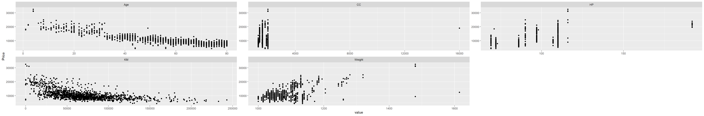
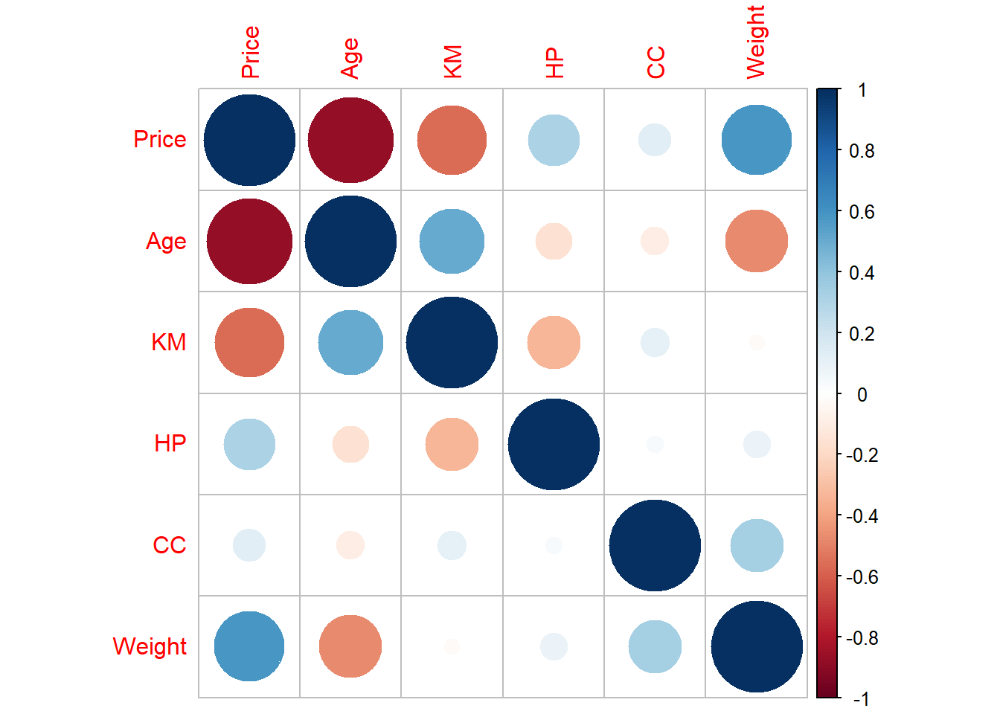
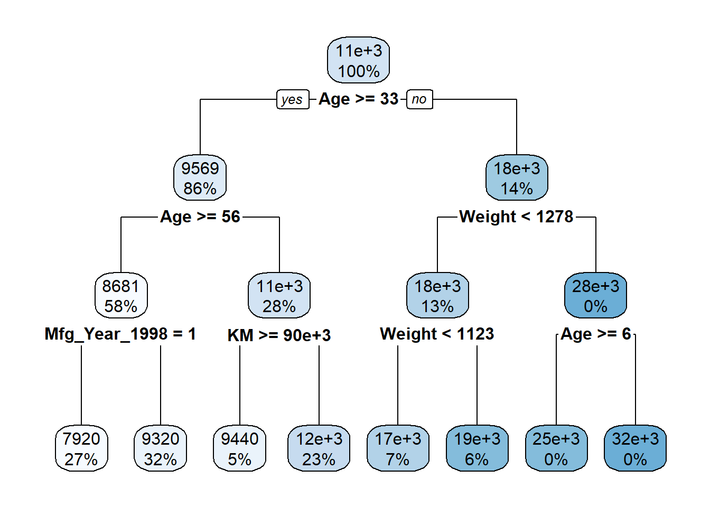
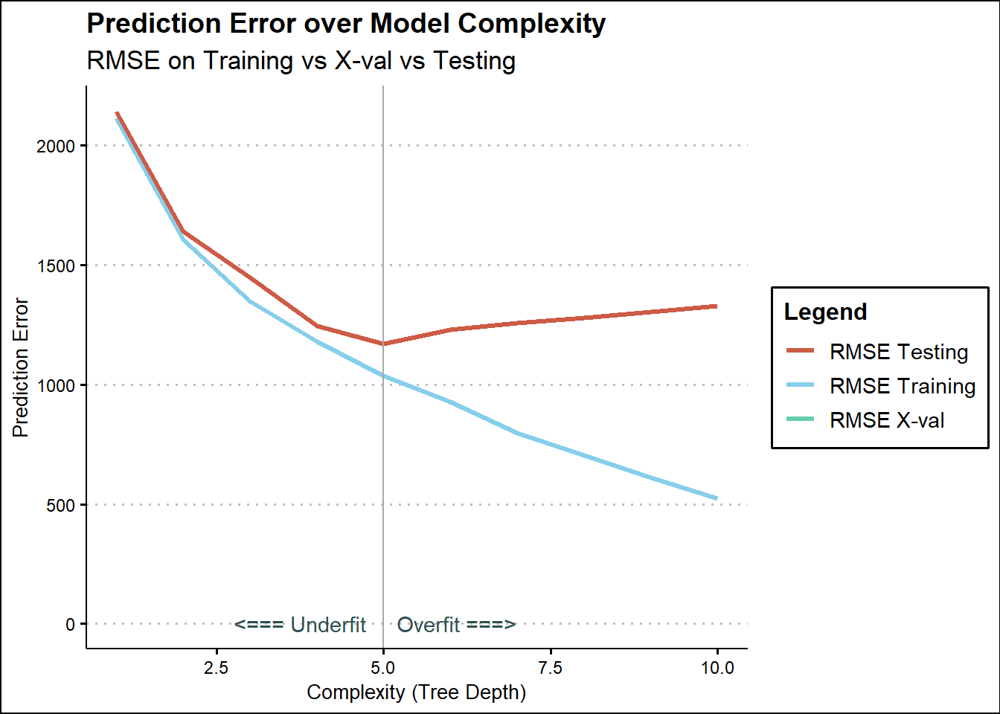
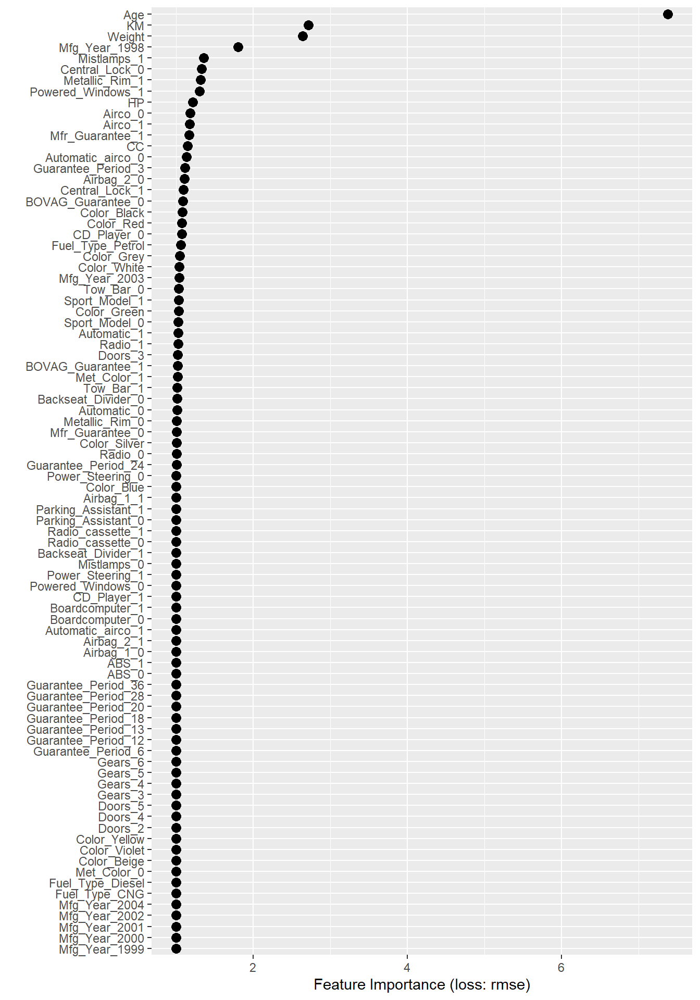
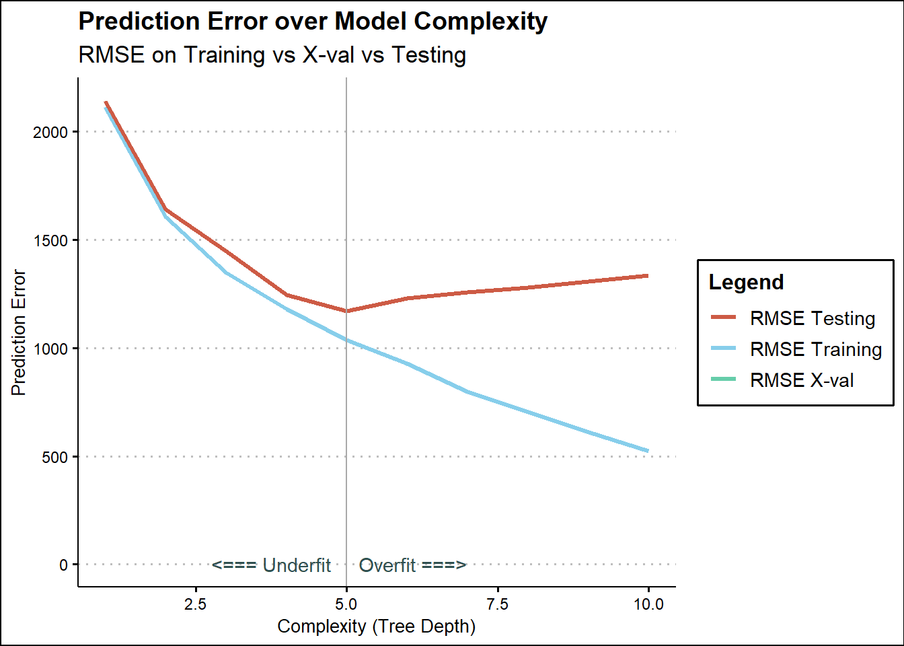

library(knitr)
suppressWarnings(
library(tidyverse))
library(rpart)
library(caret)
library(dummy)Feature Analysis and Modeling
cars <- read_csv('ToyotaCorolla.csv')
glimpse(cars)Rows: 1,436
Columns: 39
$ Id <dbl> 1, 2, 3, 4, 5, 6, 7, 8, 9, 10, 11, 12, 13, 14, 15, 1~
$ Model <chr> "TOYOTA Corolla 2.0 D4D HATCHB TERRA 2/3-Doors", "TO~
$ Price <dbl> 13500, 13750, 13950, 14950, 13750, 12950, 16900, 186~
$ Age_08_04 <dbl> 23, 23, 24, 26, 30, 32, 27, 30, 27, 23, 25, 22, 25, ~
$ Mfg_Month <dbl> 10, 10, 9, 7, 3, 1, 6, 3, 6, 10, 8, 11, 8, 2, 1, 5, ~
$ Mfg_Year <dbl> 2002, 2002, 2002, 2002, 2002, 2002, 2002, 2002, 2002~
$ KM <dbl> 46986, 72937, 41711, 48000, 38500, 61000, 94612, 758~
$ Fuel_Type <chr> "Diesel", "Diesel", "Diesel", "Diesel", "Diesel", "D~
$ HP <dbl> 90, 90, 90, 90, 90, 90, 90, 90, 192, 69, 192, 192, 1~
$ Met_Color <dbl> 1, 1, 1, 0, 0, 0, 1, 1, 0, 0, 0, 0, 0, 1, 1, 0, 1, 1~
$ Color <chr> "Blue", "Silver", "Blue", "Black", "Black", "White",~
$ Automatic <dbl> 0, 0, 0, 0, 0, 0, 0, 0, 0, 0, 0, 0, 0, 0, 0, 0, 0, 0~
$ CC <dbl> 2000, 2000, 2000, 2000, 2000, 2000, 2000, 2000, 1800~
$ Doors <dbl> 3, 3, 3, 3, 3, 3, 3, 3, 3, 3, 3, 3, 3, 3, 3, 3, 3, 3~
$ Cylinders <dbl> 4, 4, 4, 4, 4, 4, 4, 4, 4, 4, 4, 4, 4, 4, 4, 4, 4, 4~
$ Gears <dbl> 5, 5, 5, 5, 5, 5, 5, 5, 5, 5, 6, 6, 6, 6, 6, 6, 5, 5~
$ Quarterly_Tax <dbl> 210, 210, 210, 210, 210, 210, 210, 210, 100, 185, 10~
$ Weight <dbl> 1165, 1165, 1165, 1165, 1170, 1170, 1245, 1245, 1185~
$ Mfr_Guarantee <dbl> 0, 0, 1, 1, 1, 0, 0, 1, 0, 0, 1, 1, 1, 1, 1, 0, 0, 0~
$ BOVAG_Guarantee <dbl> 1, 1, 1, 1, 1, 1, 1, 1, 1, 1, 1, 1, 1, 1, 1, 1, 1, 0~
$ Guarantee_Period <dbl> 3, 3, 3, 3, 3, 3, 3, 3, 3, 3, 12, 3, 3, 3, 3, 3, 3, ~
$ ABS <dbl> 1, 1, 1, 1, 1, 1, 1, 1, 1, 1, 1, 1, 1, 1, 1, 1, 1, 1~
$ Airbag_1 <dbl> 1, 1, 1, 1, 1, 1, 1, 1, 1, 1, 1, 1, 1, 1, 1, 1, 1, 1~
$ Airbag_2 <dbl> 1, 1, 1, 1, 1, 1, 1, 1, 0, 1, 1, 1, 1, 1, 1, 1, 1, 0~
$ Airco <dbl> 0, 1, 0, 0, 1, 1, 1, 1, 1, 1, 1, 1, 1, 1, 1, 1, 1, 1~
$ Automatic_airco <dbl> 0, 0, 0, 0, 0, 0, 0, 0, 0, 0, 1, 1, 1, 1, 1, 1, 1, 0~
$ Boardcomputer <dbl> 1, 1, 1, 1, 1, 1, 1, 1, 0, 1, 0, 1, 1, 1, 1, 1, 1, 0~
$ CD_Player <dbl> 0, 1, 0, 0, 0, 0, 0, 1, 0, 0, 1, 0, 0, 1, 1, 0, 1, 0~
$ Central_Lock <dbl> 1, 1, 0, 0, 1, 1, 1, 1, 1, 0, 1, 1, 1, 1, 1, 1, 1, 1~
$ Powered_Windows <dbl> 1, 0, 0, 0, 1, 1, 1, 1, 1, 0, 1, 1, 1, 1, 1, 1, 1, 1~
$ Power_Steering <dbl> 1, 1, 1, 1, 1, 1, 1, 1, 1, 1, 1, 1, 1, 1, 1, 1, 1, 1~
$ Radio <dbl> 0, 0, 0, 0, 0, 0, 0, 0, 1, 0, 0, 0, 0, 0, 0, 0, 0, 1~
$ Mistlamps <dbl> 0, 0, 0, 0, 1, 1, 0, 0, 0, 0, 0, 1, 1, 1, 1, 1, 1, 0~
$ Sport_Model <dbl> 0, 0, 0, 0, 0, 0, 1, 0, 0, 0, 0, 1, 1, 1, 1, 1, 0, 0~
$ Backseat_Divider <dbl> 1, 1, 1, 1, 1, 1, 1, 1, 0, 1, 0, 1, 1, 1, 1, 1, 1, 0~
$ Metallic_Rim <dbl> 0, 0, 0, 0, 0, 0, 0, 0, 1, 0, 1, 1, 1, 1, 1, 1, 1, 0~
$ Radio_cassette <dbl> 0, 0, 0, 0, 0, 0, 0, 0, 1, 0, 0, 0, 0, 0, 0, 0, 0, 1~
$ Parking_Assistant <dbl> 0, 0, 0, 0, 0, 0, 0, 0, 0, 0, 0, 0, 0, 0, 0, 0, 0, 0~
$ Tow_Bar <dbl> 0, 0, 0, 0, 0, 0, 0, 0, 0, 0, 0, 0, 0, 0, 0, 0, 0, 1~There are 38 Variables(not including ID)
unique(cars$HP) [1] 90 192 69 110 97 71 116 98 86 72 107 73length(cars$HP)[1] 1436I do not know much about cars. There appears to be a few standard values for horse power. However, I will have them as a numeric variable because their values relative to each other are significant.
cars <- cars %>%
select(-Id, -Model, -Mfg_Month, -Cylinders, -Quarterly_Tax) %>%
rename(Age = Age_08_04) %>%
mutate_at(vars(-one_of(
c('Price',
'Age',
'KM',
'HP',
'CC',
'Weight')
)), .funs = factor)This removed some irrelevant variables. Then set non numeric values to factors.
glimpse(cars)Rows: 1,436
Columns: 34
$ Price <dbl> 13500, 13750, 13950, 14950, 13750, 12950, 16900, 186~
$ Age <dbl> 23, 23, 24, 26, 30, 32, 27, 30, 27, 23, 25, 22, 25, ~
$ Mfg_Year <fct> 2002, 2002, 2002, 2002, 2002, 2002, 2002, 2002, 2002~
$ KM <dbl> 46986, 72937, 41711, 48000, 38500, 61000, 94612, 758~
$ Fuel_Type <fct> Diesel, Diesel, Diesel, Diesel, Diesel, Diesel, Dies~
$ HP <dbl> 90, 90, 90, 90, 90, 90, 90, 90, 192, 69, 192, 192, 1~
$ Met_Color <fct> 1, 1, 1, 0, 0, 0, 1, 1, 0, 0, 0, 0, 0, 1, 1, 0, 1, 1~
$ Color <fct> Blue, Silver, Blue, Black, Black, White, Grey, Grey,~
$ Automatic <fct> 0, 0, 0, 0, 0, 0, 0, 0, 0, 0, 0, 0, 0, 0, 0, 0, 0, 0~
$ CC <dbl> 2000, 2000, 2000, 2000, 2000, 2000, 2000, 2000, 1800~
$ Doors <fct> 3, 3, 3, 3, 3, 3, 3, 3, 3, 3, 3, 3, 3, 3, 3, 3, 3, 3~
$ Gears <fct> 5, 5, 5, 5, 5, 5, 5, 5, 5, 5, 6, 6, 6, 6, 6, 6, 5, 5~
$ Weight <dbl> 1165, 1165, 1165, 1165, 1170, 1170, 1245, 1245, 1185~
$ Mfr_Guarantee <fct> 0, 0, 1, 1, 1, 0, 0, 1, 0, 0, 1, 1, 1, 1, 1, 0, 0, 0~
$ BOVAG_Guarantee <fct> 1, 1, 1, 1, 1, 1, 1, 1, 1, 1, 1, 1, 1, 1, 1, 1, 1, 0~
$ Guarantee_Period <fct> 3, 3, 3, 3, 3, 3, 3, 3, 3, 3, 12, 3, 3, 3, 3, 3, 3, ~
$ ABS <fct> 1, 1, 1, 1, 1, 1, 1, 1, 1, 1, 1, 1, 1, 1, 1, 1, 1, 1~
$ Airbag_1 <fct> 1, 1, 1, 1, 1, 1, 1, 1, 1, 1, 1, 1, 1, 1, 1, 1, 1, 1~
$ Airbag_2 <fct> 1, 1, 1, 1, 1, 1, 1, 1, 0, 1, 1, 1, 1, 1, 1, 1, 1, 0~
$ Airco <fct> 0, 1, 0, 0, 1, 1, 1, 1, 1, 1, 1, 1, 1, 1, 1, 1, 1, 1~
$ Automatic_airco <fct> 0, 0, 0, 0, 0, 0, 0, 0, 0, 0, 1, 1, 1, 1, 1, 1, 1, 0~
$ Boardcomputer <fct> 1, 1, 1, 1, 1, 1, 1, 1, 0, 1, 0, 1, 1, 1, 1, 1, 1, 0~
$ CD_Player <fct> 0, 1, 0, 0, 0, 0, 0, 1, 0, 0, 1, 0, 0, 1, 1, 0, 1, 0~
$ Central_Lock <fct> 1, 1, 0, 0, 1, 1, 1, 1, 1, 0, 1, 1, 1, 1, 1, 1, 1, 1~
$ Powered_Windows <fct> 1, 0, 0, 0, 1, 1, 1, 1, 1, 0, 1, 1, 1, 1, 1, 1, 1, 1~
$ Power_Steering <fct> 1, 1, 1, 1, 1, 1, 1, 1, 1, 1, 1, 1, 1, 1, 1, 1, 1, 1~
$ Radio <fct> 0, 0, 0, 0, 0, 0, 0, 0, 1, 0, 0, 0, 0, 0, 0, 0, 0, 1~
$ Mistlamps <fct> 0, 0, 0, 0, 1, 1, 0, 0, 0, 0, 0, 1, 1, 1, 1, 1, 1, 0~
$ Sport_Model <fct> 0, 0, 0, 0, 0, 0, 1, 0, 0, 0, 0, 1, 1, 1, 1, 1, 0, 0~
$ Backseat_Divider <fct> 1, 1, 1, 1, 1, 1, 1, 1, 0, 1, 0, 1, 1, 1, 1, 1, 1, 0~
$ Metallic_Rim <fct> 0, 0, 0, 0, 0, 0, 0, 0, 1, 0, 1, 1, 1, 1, 1, 1, 1, 0~
$ Radio_cassette <fct> 0, 0, 0, 0, 0, 0, 0, 0, 1, 0, 0, 0, 0, 0, 0, 0, 0, 1~
$ Parking_Assistant <fct> 0, 0, 0, 0, 0, 0, 0, 0, 0, 0, 0, 0, 0, 0, 0, 0, 0, 0~
$ Tow_Bar <fct> 0, 0, 0, 0, 0, 0, 0, 0, 0, 0, 0, 0, 0, 0, 0, 0, 0, 1~That made the values we want to keep numeric variables and the rest factors. Now lets check them for NAs
cars %>%
select(Price,
Age,
KM,
HP,
CC,
Weight) %>%
summary() Price Age KM HP
Min. : 4350 Min. : 1.00 Min. : 1 Min. : 69.0
1st Qu.: 8450 1st Qu.:44.00 1st Qu.: 43000 1st Qu.: 90.0
Median : 9900 Median :61.00 Median : 63390 Median :110.0
Mean :10731 Mean :55.95 Mean : 68533 Mean :101.5
3rd Qu.:11950 3rd Qu.:70.00 3rd Qu.: 87021 3rd Qu.:110.0
Max. :32500 Max. :80.00 Max. :243000 Max. :192.0
CC Weight
Min. : 1300 Min. :1000
1st Qu.: 1400 1st Qu.:1040
Median : 1600 Median :1070
Mean : 1577 Mean :1072
3rd Qu.: 1600 3rd Qu.:1085
Max. :16000 Max. :1615 There appears to not be any NAs in our numeric features.
cars %>%
keep(is.factor) %>%
summary() Mfg_Year Fuel_Type Met_Color Color Automatic Doors Gears
1998:392 CNG : 17 0:467 Grey :301 0:1356 2: 2 3: 2
1999:441 Diesel: 155 1:969 Blue :283 1: 80 3:622 4: 1
2000:225 Petrol:1264 Red :278 4:138 5:1390
2001:192 Green :220 5:674 6: 43
2002: 87 Black :191
2003: 75 Silver :122
2004: 24 (Other): 41
Mfr_Guarantee BOVAG_Guarantee Guarantee_Period ABS Airbag_1 Airbag_2
0:848 0: 150 3 :1274 0: 268 0: 42 0: 398
1:588 1:1286 6 : 77 1:1168 1:1394 1:1038
12 : 73
24 : 4
36 : 4
13 : 1
(Other): 3
Airco Automatic_airco Boardcomputer CD_Player Central_Lock Powered_Windows
0:706 0:1355 0:1013 0:1122 0:603 0:629
1:730 1: 81 1: 423 1: 314 1:833 1:807
Power_Steering Radio Mistlamps Sport_Model Backseat_Divider Metallic_Rim
0: 32 0:1226 0:1067 0:1005 0: 330 0:1142
1:1404 1: 210 1: 369 1: 431 1:1106 1: 294
Radio_cassette Parking_Assistant Tow_Bar
0:1227 0:1432 0:1037
1: 209 1: 4 1: 399
Is appears that there are not any NAs in our factor data as well!
cars %>%
ggplot(aes(x=Price))+ geom_histogram(aes(y = after_stat(density)), fill = "#AB0000" )+geom_density()+ labs(title = "Price of Corrollas",x = "Price")
Price is appropriate for linear regression because we are analyzing the relationship of variables on a quantitative variable.
The graph is a bit skewed right. However around the peak of the histogram the distribution is very normal. Then there is a small portion of the data outside of this normal distribution. Given the still relatively normal shape of the graph I believe it is still appropriate to do linear regression without and transformation.
cars %>%
select(Price,
Age,
KM,
HP,
CC,
Weight) %>%
gather(-Price, key = "var", value = "value") %>%
ggplot(aes(x = value, y = Price)) +
geom_point() +
facet_wrap(~ var, scales = "free")
Age of car and KM accumulated on the Car displayed a negative correlation with Price. Then weight appeared to have a loose correlation with Price. My assumption would be the weight would play a role in the fuel efficiency which is not a variable in this data set.All of these will be analyed further.
library(corrplot)
cars %>%
keep(is.numeric) %>%
cor() %>%
corrplot()
Age and KM have a correlation around -.5 this makes sense. As the older the car gets the more miles it is likely to accumulate. This correlation is not strong enough for us to worry, despicably given our background knowledge of the independent importance of each variable. Additionally weight and age are slightly correlated, not much to worry about, however this would most likely be as technology advances the weight of the cars gradually change. HO
# Convert all factors to dummy vars.
car_dum = dummy(cars, int = TRUE)
car_num = cars %>%
keep(is.numeric)
cars = bind_cols(car_num, car_dum)
rm(car_dum, car_num)set.seed(2)
samp = createDataPartition(cars$Price, p = 0.7, list = FALSE)
training = cars[samp, ]
testing = cars[-samp, ]
rm(samp)This seperates are data into training and test data variable
Eleminating one dumy variable each
training_ols = training %>%
select(-Mfg_Year_1998,
-Fuel_Type_CNG,
-Met_Color_0,
-Color_Beige,
-Automatic_0,
-Doors_2,
-Gears_3,
-Mfr_Guarantee_0,
-BOVAG_Guarantee_0,
-Guarantee_Period_13,
-Guarantee_Period_18,
-Guarantee_Period_20,
-Guarantee_Period_24,
-Guarantee_Period_28,
-Guarantee_Period_36,
-ABS_0,
-Airbag_1_0,
-Airbag_2_0,
-Airco_0,
-Automatic_airco_0,
-Boardcomputer_0,
-CD_Player_0,
-Central_Lock_0,
-Powered_Windows_0,
-Power_Steering_0,
-Radio_0,
-Mistlamps_0,
-Sport_Model_0,
-Backseat_Divider_0,
-Metallic_Rim_0,
-Radio_cassette_0,
-Parking_Assistant_0,
-Tow_Bar_0
)# We set some parameters to control
# how the tree grows.
ctrl = rpart::rpart.control(cp=0.0,
minbucket = 1,
maxdepth = 3)
# We actually grow the tree.
dt = rpart(Price ~ .,
data = training,
method = "anova",
control = ctrl
)
# Use the tree we grew to get
# predicted values.
pred = predict(dt, training)
# Calculate the RMSE of our tree
# on the training data.
pred.rmse = caret::RMSE(pred = pred, obs = training$Price)
# Print out the error measures
paste("Sample Mean:", mean(training$Price))[1] "Sample Mean: 10754.4736842105"paste("Sample Stdev:", sd(training$Price))[1] "Sample Stdev: 3660.80912943569"paste("Model RMSE:", pred.rmse)[1] "Model RMSE: 1347.34773584362"RMSE is the average error for each point. The average error for this model using training data is $1347
pred = predict(dt, testing)
pred.rmse = caret::RMSE(pred = pred, obs = testing$Price)
paste("Model RMSE:", pred.rmse)[1] "Model RMSE: 1446.39125178949"Using testing data the average error is $1446
# Visualize the tree we grew.
rpart.plot::rpart.plot(dt)
This tree is not too complex. It demonstrated how important the Age is, and then we also find results the support some of the other high important features we found such as weight and KM
# Create empty vectors to store values.
rmse.train = c()
rmse.test = c()
rmse.cv = c()
sim.size <- length(training$Price)
# BEGIN LOOP -----------------------------
for(i in 1:10) {
# Setup tree growth control parameters
ctrl = rpart::rpart.control(cp=0.0,
minbucket = 1,
maxdepth = i)
# Grow the tree
dt = rpart(Price ~ .,
data = training,
method = "anova",
control = ctrl
)
# Cross validation set
num_folds = 10
cv_vals = c()
fold_seq = seq(1, sim.size, sim.size/num_folds)
# BEGIN CV LOOP -----------------------------------------------------
for(j in 1:num_folds) {
fold_rows = seq(fold_seq[j], fold_seq[j]+(sim.size/num_folds)-1, 1)
idx = seq(1, sim.size, 1) %in% fold_rows
current_fold = training[idx, ]
remaining = training[!idx, ]
# Grow tree with specified ctrls
# on the non-heldout folds.
cv.dt = rpart(Price ~.,
data = remaining,
method = "anova",
control = ctrl
)
# Get predictions on hold-out fold.
pred.cv = predict(cv.dt, current_fold)
# Evaluate tree performance on hold-out fold
cv_vals[j] = caret::RMSE(pred = pred.cv, obs = current_fold$Price)
}
# END CV LOOP --------------------------------------------------------
# Get predictions on training data
pred.train = predict(dt, training)
# Get predictions on testing data
pred.test = predict(dt, testing)
# Record model performance for training, testing, and cv
rmse.train[i] = caret::RMSE(pred = pred.train, obs = training$Price)
rmse.test[i] = caret::RMSE(pred = pred.test, obs = testing$Price)
rmse.cv[i] = mean(cv_vals)
}
# END LOOP --------------------------------# Visualize Model Error Over Complexity
# -------------------------------------
# Set some colors for our plot.
colors <- c("RMSE Training" = "skyblue",
"RMSE Testing" = "coral3",
"RMSE X-val" = "aquamarine3")
# Create the plot.
depth = c(1:10)
ggplot() +
geom_line(aes(x = depth, y = rmse.train, color = "RMSE Training"), size = 1.2) +
geom_line(aes(x = depth, y = rmse.test, color = "RMSE Testing"), size = 1.2) +
geom_line(aes(x = depth, y = rmse.cv, color = "RMSE X-val"), size = 1.2) +
geom_vline(xintercept = depth[which(rmse.test == min(rmse.test))],
color = "darkgrey") +
geom_text(aes(x=3.75, y=1.85, label="<=== Underfit"), color="darkslategrey") +
geom_text(aes(x=6.1, y=1.85, label="Overfit ===>"), color="darkslategrey") +
labs(title = "Prediction Error over Model Complexity",
subtitle = "RMSE on Training vs X-val vs Testing",
x = "Complexity (Tree Depth)",
y = "Prediction Error",
color = "Legend") +
scale_color_manual(values = colors) +
ggthemes::theme_clean()
Looks like the best complexity for this model is 5.
library(iml)
library(patchwork)
lm_predictor = iml::Predictor$new(dt, data = training)
lm_imp = iml::FeatureImp$new(lm_predictor, loss = "rmse", compare = "ratio", n.repetitions = 1)
plot(lm_imp)
Age and the other numeric factors appear to be of high importance as suggested by my work earlier. Features of less importance are the weird colors, fuel types, and miscellaneous features.
results<-lm_imp$results
results$feature [1] "Age" "KM" "Weight"
[4] "Mfg_Year_1998" "Mistlamps_1" "Central_Lock_0"
[7] "Metallic_Rim_1" "Powered_Windows_1" "HP"
[10] "Airco_0" "Airco_1" "Mfr_Guarantee_1"
[13] "CC" "Automatic_airco_0" "Guarantee_Period_3"
[16] "Airbag_2_0" "Central_Lock_1" "BOVAG_Guarantee_0"
[19] "Color_Black" "Color_Red" "CD_Player_0"
[22] "Fuel_Type_Petrol" "Color_Grey" "Color_White"
[25] "Mfg_Year_2003" "Tow_Bar_0" "Sport_Model_1"
[28] "Color_Green" "Sport_Model_0" "Automatic_1"
[31] "Radio_1" "Doors_3" "BOVAG_Guarantee_1"
[34] "Met_Color_1" "Tow_Bar_1" "Backseat_Divider_0"
[37] "Automatic_0" "Metallic_Rim_0" "Mfr_Guarantee_0"
[40] "Color_Silver" "Radio_0" "Guarantee_Period_24"
[43] "Power_Steering_0" "Color_Blue" "Airbag_1_1"
[46] "Mfg_Year_1999" "Mfg_Year_2000" "Mfg_Year_2001"
[49] "Mfg_Year_2002" "Mfg_Year_2004" "Fuel_Type_CNG"
[52] "Fuel_Type_Diesel" "Met_Color_0" "Color_Beige"
[55] "Color_Violet" "Color_Yellow" "Doors_2"
[58] "Doors_4" "Doors_5" "Gears_3"
[61] "Gears_4" "Gears_5" "Gears_6"
[64] "Guarantee_Period_6" "Guarantee_Period_12" "Guarantee_Period_13"
[67] "Guarantee_Period_18" "Guarantee_Period_20" "Guarantee_Period_28"
[70] "Guarantee_Period_36" "ABS_0" "ABS_1"
[73] "Airbag_1_0" "Airbag_2_1" "Automatic_airco_1"
[76] "Boardcomputer_0" "Boardcomputer_1" "CD_Player_1"
[79] "Powered_Windows_0" "Power_Steering_1" "Mistlamps_0"
[82] "Backseat_Divider_1" "Radio_cassette_0" "Radio_cassette_1"
[85] "Parking_Assistant_0" "Parking_Assistant_1"There are so many columns with little impact I cut out the first 50 because most of them has little influence.
results_feature <-results$feature
features_to_remove <- results_feature[35:86]
features_to_remove [1] "Tow_Bar_1" "Backseat_Divider_0" "Automatic_0"
[4] "Metallic_Rim_0" "Mfr_Guarantee_0" "Color_Silver"
[7] "Radio_0" "Guarantee_Period_24" "Power_Steering_0"
[10] "Color_Blue" "Airbag_1_1" "Mfg_Year_1999"
[13] "Mfg_Year_2000" "Mfg_Year_2001" "Mfg_Year_2002"
[16] "Mfg_Year_2004" "Fuel_Type_CNG" "Fuel_Type_Diesel"
[19] "Met_Color_0" "Color_Beige" "Color_Violet"
[22] "Color_Yellow" "Doors_2" "Doors_4"
[25] "Doors_5" "Gears_3" "Gears_4"
[28] "Gears_5" "Gears_6" "Guarantee_Period_6"
[31] "Guarantee_Period_12" "Guarantee_Period_13" "Guarantee_Period_18"
[34] "Guarantee_Period_20" "Guarantee_Period_28" "Guarantee_Period_36"
[37] "ABS_0" "ABS_1" "Airbag_1_0"
[40] "Airbag_2_1" "Automatic_airco_1" "Boardcomputer_0"
[43] "Boardcomputer_1" "CD_Player_1" "Powered_Windows_0"
[46] "Power_Steering_1" "Mistlamps_0" "Backseat_Divider_1"
[49] "Radio_cassette_0" "Radio_cassette_1" "Parking_Assistant_0"
[52] "Parking_Assistant_1"I wanted to check with my own human intuition. I Read up and down these as they all logically made sense to be of little importance, which made me feel better about the modeling.
cars<- cars[, -which(names(cars) %in% features_to_remove)]training<- training[, -which(names(training) %in% features_to_remove)]
testing <- testing[, -which(names(testing) %in% features_to_remove)]Removing those features here.
# Create empty vectors to store values.
rmse.train = c()
rmse.test = c()
rmse.cv = c()
sim.size <- length(training$Price)
# BEGIN LOOP -----------------------------
for(i in 1:10) {
# Setup tree growth control parameters
ctrl = rpart::rpart.control(cp=0.0,
minbucket = 1,
maxdepth = i)
# Grow the tree
dt = rpart(Price ~ .,
data = training,
method = "anova",
control = ctrl
)
# Cross validation set
num_folds = 10
cv_vals = c()
fold_seq = seq(1, sim.size, sim.size/num_folds)
# BEGIN CV LOOP -----------------------------------------------------
for(j in 1:num_folds) {
fold_rows = seq(fold_seq[j], fold_seq[j]+(sim.size/num_folds)-1, 1)
idx = seq(1, sim.size, 1) %in% fold_rows
current_fold = training[idx, ]
remaining = training[!idx, ]
# Grow tree with specified ctrls
# on the non-heldout folds.
cv.dt = rpart(Price ~.,
data = remaining,
method = "anova",
control = ctrl
)
# Get predictions on hold-out fold.
pred.cv = predict(cv.dt, current_fold)
# Evaluate tree performance on hold-out fold
cv_vals[j] = caret::RMSE(pred = pred.cv, obs = current_fold$Price)
}
# END CV LOOP --------------------------------------------------------
# Get predictions on training data
pred.train = predict(dt, training)
# Get predictions on testing data
pred.test = predict(dt, testing)
# Record model performance for training, testing, and cv
rmse.train[i] = caret::RMSE(pred = pred.train, obs = training$Price)
rmse.test[i] = caret::RMSE(pred = pred.test, obs = testing$Price)
rmse.cv[i] = mean(cv_vals)
}
# END LOOP --------------------------------# Visualize Model Error Over Complexity
# -------------------------------------
# Set some colors for our plot.
colors <- c("RMSE Training" = "skyblue",
"RMSE Testing" = "coral3",
"RMSE X-val" = "aquamarine3")
# Create the plot.
depth = c(1:10)
ggplot() +
geom_line(aes(x = depth, y = rmse.train, color = "RMSE Training"), size = 1.2) +
geom_line(aes(x = depth, y = rmse.test, color = "RMSE Testing"), size = 1.2) +
geom_line(aes(x = depth, y = rmse.cv, color = "RMSE X-val"), size = 1.2) +
geom_vline(xintercept = depth[which(rmse.test == min(rmse.test))],
color = "darkgrey") +
geom_text(aes(x=3.75, y=1.85, label="<=== Underfit"), color="darkslategrey") +
geom_text(aes(x=6.1, y=1.85, label="Overfit ===>"), color="darkslategrey") +
labs(title = "Prediction Error over Model Complexity",
subtitle = "RMSE on Training vs X-val vs Testing",
x = "Complexity (Tree Depth)",
y = "Prediction Error",
color = "Legend") +
scale_color_manual(values = colors) +
ggthemes::theme_clean()
After cutting out over half of the variables the tree was refitted. The numbers did not change dirastically. And the complexity of 5 remained constant.
# Create empty vectors to store values.
rmse.train = c()
rmse.test = c()
rmse.cv = c()
sim.size <- length(training$Price)
# BEGIN LOOP -----------------------------
for(i in 1:10) {
# Setup tree growth control parameters
ctrl = rpart::rpart.control(cp=0.0,
minbucket = 1,
maxdepth = 5)
# Grow the tree
dt = rpart(Price ~ .,
data = training,
method = "anova",
control = ctrl
)
# Cross validation set
num_folds = 10
cv_vals = c()
fold_seq = seq(1, sim.size, sim.size/num_folds)
# BEGIN CV LOOP -----------------------------------------------------
for(j in 1:num_folds) {
fold_rows = seq(fold_seq[j], fold_seq[j]+(sim.size/num_folds)-1, 1)
idx = seq(1, sim.size, 1) %in% fold_rows
current_fold = training[idx, ]
remaining = training[!idx, ]
# Grow tree with specified ctrls
# on the non-heldout folds.
cv.dt = rpart(Price ~.,
data = remaining,
method = "anova",
control = ctrl
)
# Get predictions on hold-out fold.
pred.cv = predict(cv.dt, current_fold)
# Evaluate tree performance on hold-out fold
cv_vals[j] = caret::RMSE(pred = pred.cv, obs = current_fold$Price)
}
# END CV LOOP --------------------------------------------------------
# Get predictions on training data
pred.train = predict(dt, training)
# Get predictions on testing data
pred.test = predict(dt, testing)
# Record model performance for training, testing, and cv
rmse.train[i] = caret::RMSE(pred = pred.train, obs = training$Price)
rmse.test[i] = caret::RMSE(pred = pred.test, obs = testing$Price)
rmse.cv[i] = mean(cv_vals)
}
# END LOOP --------------------------------rmse.train[1][1] 1038.042rmse.test[1][1] 1169.218The cross Validation error using our training data was a RMSE of 1038. This means the average error of the model from the training data was $1038. The RMSE of the model when using the test data with optimum complexity has an average error of $1169.
This result tells us our model with real corolla data should preform with an an average error of $1169.